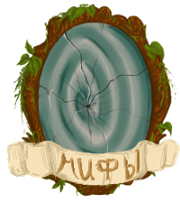
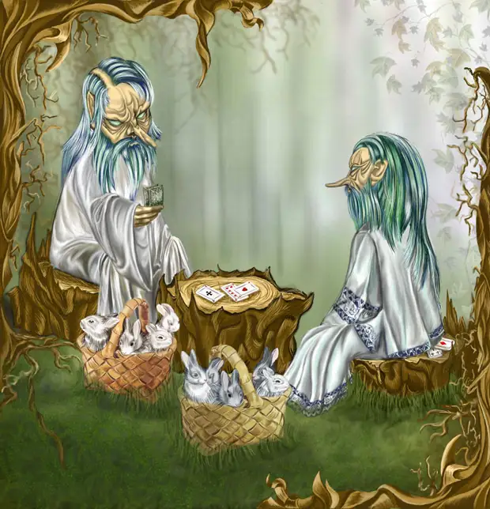

дух, живущий под печкой
Лесавки— мелкие лесные духи, бабушки и дедушки лесовика. Живут в опавшей с деревьев листве. Бодрствуют с начала листопада и до начала зимы. В это время они копошатся в листве, шебуршат, взметают листья, кружат их, хороводы водят — всячески веселятся, а с наступлением зимы засыпают до следующего листопада. Представлялись внешне похожими на ежей, копошащихся в листве под деревьями.
По другим источникам, лесавки - дед и бабка Лешего. Они очень маленькие, серенькие, похожи на ежей. Обитают в прошлогодней листве, бодрствуя с конца лета , до середины осени. Все это время веселятся, водят хороводы, поднимают листву, шелестят, шебуршатся, копошатся — маленькие лохматые клубочки за короткое время натрудятся, умаятся, а потом долго спят.
Еще по одной версии - Лесавки — в славянской мифологии — дети лешего и кикиморы. Так же к детям лешего относят проклятых, унесенные и уведенных крестьянских детей, а так же дети, рожденные в браке с лешачихой. Как и всякие дети они любят шалить, сбивают с дороги путников, путают тропы, сыплют на голову труху и обматывают паутиной. Но смертельного вреда для людей не представляют. Одеваются в одежки изо мха и листвы, поэтому могут маскироваться на деревьях и в кустах, оставаясь незамеченными. Иногда могут принять вид причудливых веток и коряжек. Ребенок лешего (которым он нередко стремится подменить обычное дитя) частенько уродлив (криклив, «голова с пивной котел»), или незначительно отличается от прочих лесных духов. В Вятской губернии считали, что «плодом от сожития лешего с унесенной им девушкой бывает тоже леший, но не столько злой, как тот, который происходит от лешачихи. Людская кровь-де в том стоит за себя. Леший, родившийся от девушки, пожалуй, рад бы делать и добро людям, но другие лешие при разделе лесов всегда стараются отмежевать ему такой участок, от которого верст на тысячу во все стороны нет никакого жилья».